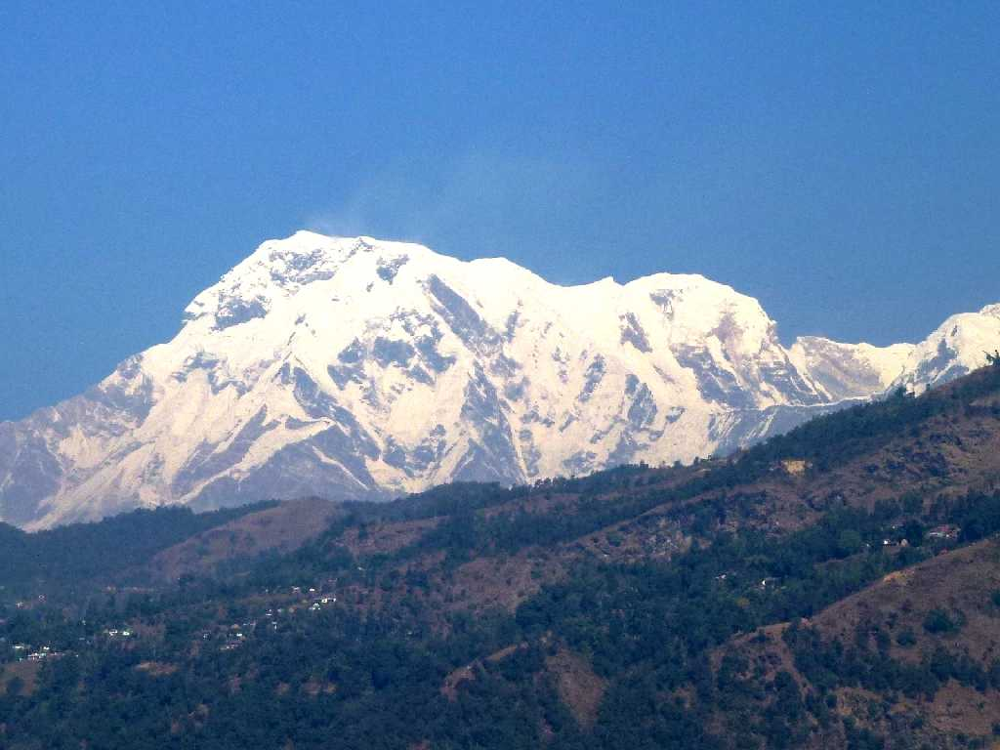
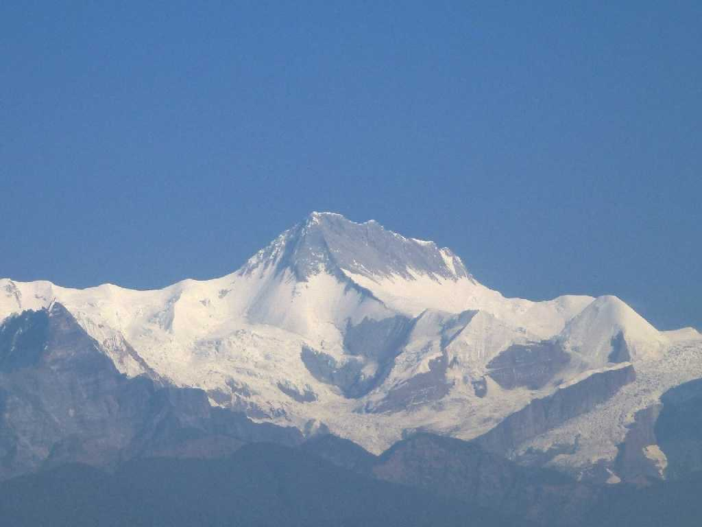
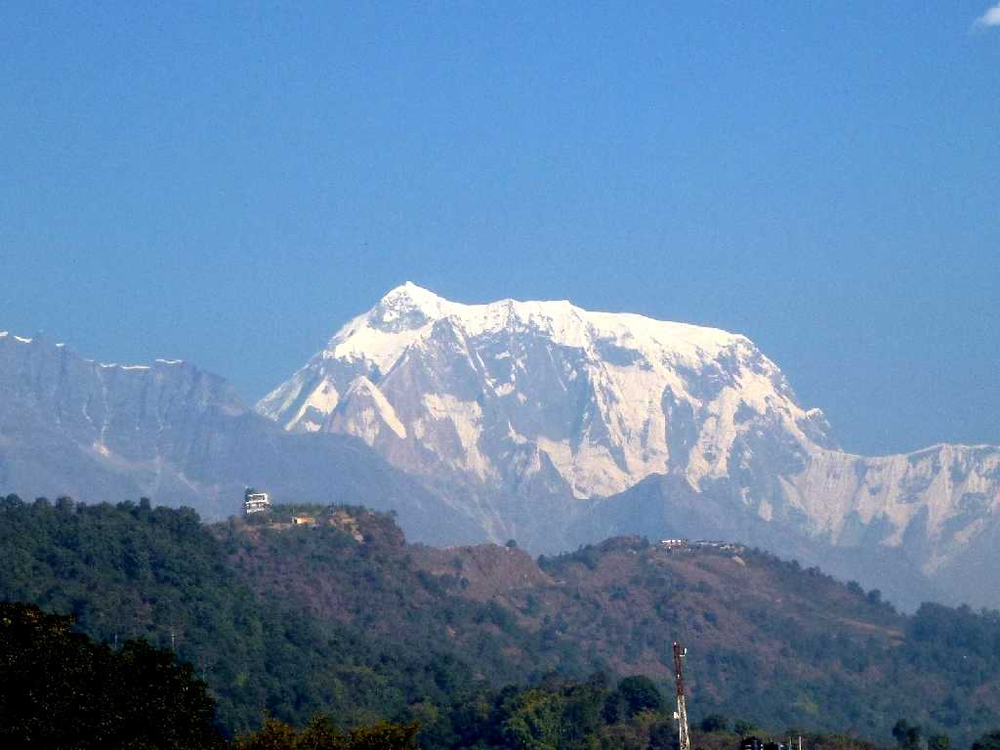
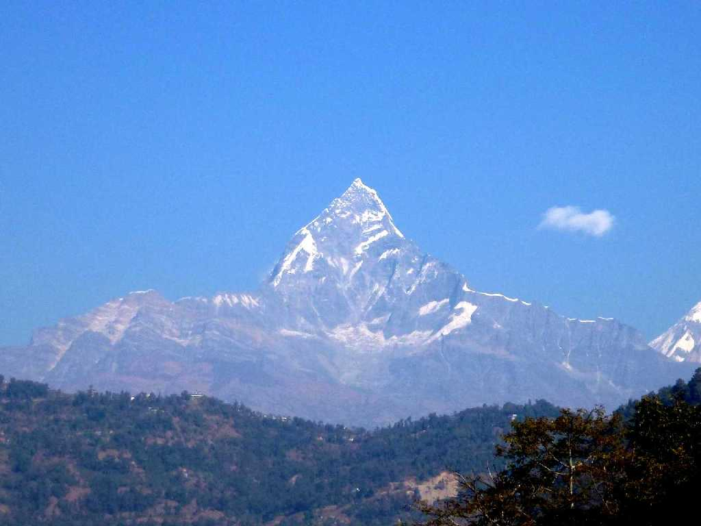
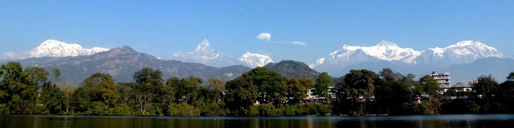
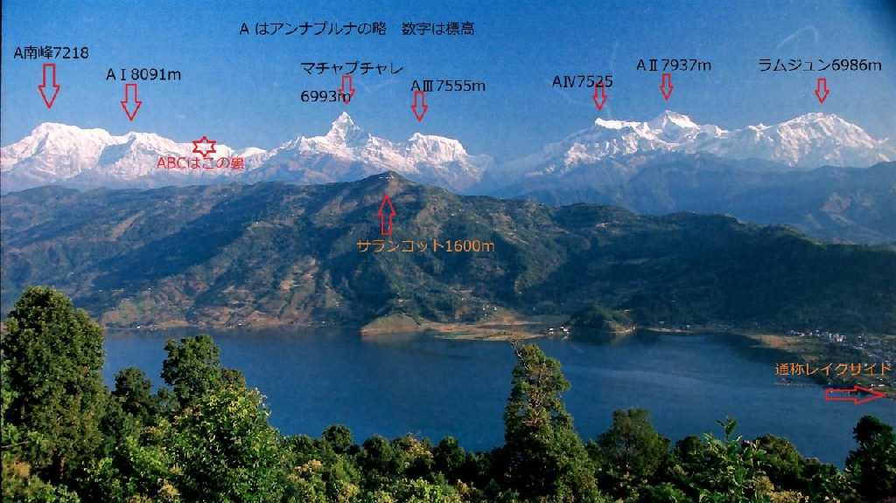

December 29 2012 8,091m Annapurna Pokhara
アンナプルナ第１峰８,０９１ｍ

December 29 2012 7,937m Annapurna Pokhara
アンナプルナ第２峰７,９３７ｍ

December 29 2012 7,555m Annapurna Pokhara
アンナプルナ第３峰７,５５５ｍ
December 29 2012 7,525m Annapurna Pokhara
アンナプルナ第４峰７,５２５ｍ

December 29 2012 6,993m Machhapuchchhre
魚の尾を意味するマチャプチャレ６,９９３ｍ

December 29 2012 10:16 Annapurna Phewa Lake Pokhara
